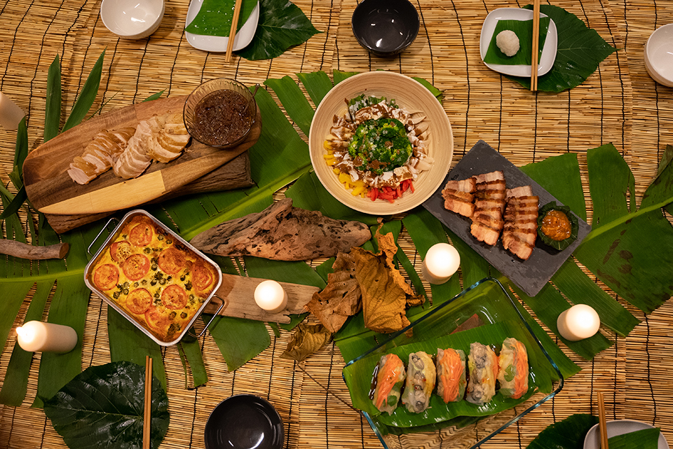

揪教育 Education
抵「嘉」大漢—嘉義人的成年禮
佇嘉木是一群熱愛自然、追求自我成長並推廣體驗教育的嘉義在地夥伴。我們秉持「做中學、學中覺」的精神，用生動有趣的方式將體驗教育帶給更多人。身為「木都」的嘉義，擁有豐富的自然資源，我們以「自然教育」為核心，藉由深度的自然體驗，傳遞愛鄉土、愛自然、愛自己的理念，讓每一位參與者在探索自然的過程中成就更好的自己。
願景：「創造一個每個人都能持續成長、自由學習，並與自然和諧共生的環境。」
價值主張：
1.陪伴成長旅程：我們希望每個人都能在探索和成長的旅途中，找到屬於自己的方向，釋放潛能，實現更好的自己。
2.創造包容的學習環境：致力於建立多元的教育生態，讓每個人根據需求和興趣選擇合適的學習方式，獲得知識與技能。
3.深化與自然的連結：我們推廣可持續的生活方式，鼓勵人們重新發現自然，尊重自然，促進人與自然之間的和諧共生，共創美好未來。
打造「嘉義人的成年禮」： 「嘉義人的成年禮」活動旨在重新連結嘉義人與在地文化，以嘉義為舞台，透過嘉義公園尋寶、木工手作筷子、攀樹挑戰等體驗，讓參與者了解嘉義的歷史故事，學習職人精神，並培養KANO的勇氣，體會嘉義人不屈不撓的精神。活動不僅著重於對家園的情感與守護，還承載了傳承在地韌性的使命。我們藉由地方創生輔導計畫，期盼讓更多人看見嘉義的風土美食和自然教育，打造適合青年族群的深度旅行，讓嘉義的在地文化與觀光產業共同邁向永續。
